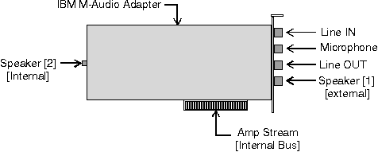

M-Audio Adapter Specifics

- The speakers (1) connector is the external speakers
jack on the back of the card. The speakers (2) connector is really the internal
PC speaker.
- The Line OUT and speakers (1) connectors can
be enabled or disabled by the ampmix device, although the adapter is incapable
of actually switching the output. The ampmix device does report that the
connector is actually enabled or disabled.
- The speakers(2) connector can be enabled or disabled,
resulting in the PC internal speaker being turned on or off.
- The microphone and line IN connectors are mutually
exclusive. Enabling one connector automatically disables the other. Disabling
both connectors automatically enables the microphone.
- The amp stream connector represents the transfer
of digital audio information to and from the M-Audio card. This connector
is always enabled.
- The M-Audio adapter does not support independent
control of volume for the left and right channels of a stereo signal. Any
device connected to an M-Audio amplifier-mixer device returns MCIERR_UNSUPPORTED_FLAG
if an attempt is made to independently control the volume of the left and
right channels with the MCI_SET command.
[Back: Amplifier-Mixer Command Messages]
[Next: Waveform Audio Device]